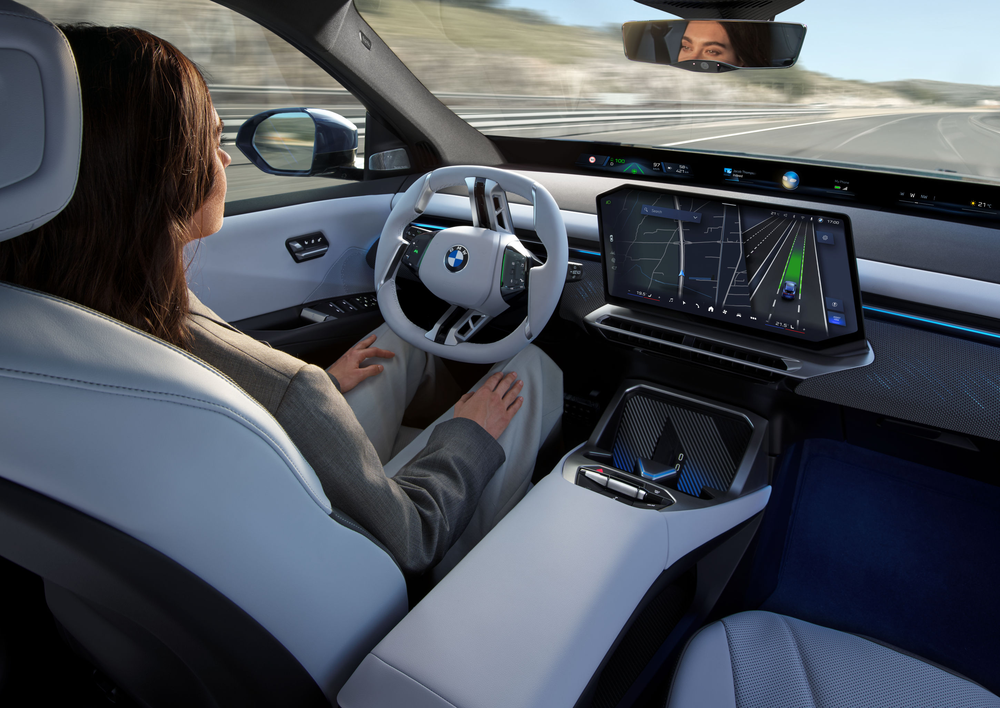

Qualcomm TechnologiesとBMW Groupは、3年間の協業の成果として、自動運転システムSnapdragon Ride Pilotを発表した。このシステムはSnapdragon Ride SoC上に構築され、両社が共同開発したSnapdragon Ride ADソフトウェアスタックを用いる。
ソフトウェアスタックは、Qualcommが開発したPerception Stackと、BMWと共同開発したDrive Policy Engineを備える。自動車メーカーやTier 1が、自社のDrive Policyを使う場合でも、ターンキーのプラットフォームを使う場合でも、柔軟でコスト効率が高く、市場投入を早めるスケーラブルなソリューションを構築できるよう設計されている。
360度知覚では、物体検出、周辺視界、車線認識、標識解釈、駐車支援、ドライバーモニタリング、マッピングにカメラベースのビジョンスタックを使う。BEVアーキテクチャによる低レベル知覚と、魚眼カメラから情報を抽出する新手法により性能を高める。カメラとレーダー間の低レベル知覚は、追跡レイテンシを減らし、アクティブセーフティでの性能を最適化し、複雑な都市交差点を検出する。
安全面では、ASILと機能安全、NCAP、FMVSS127、DCASなどの規制への対応、SOTIF、サイバーセキュリティを重視する。文脈認識型の運転では、行動予測と行動計画にルールベースモデルとAIベースモデルのバランスを使う。
新型BMW iX3のADASはSnapdragon Ride上に構築される。自動運転機能を統合する中央インテリジェントコンピュータは前世代比20倍の計算能力を持つ。システムは8MPおよび3MPの高精細カメラ、レーダー、HDマップ、高精度GNSS、V2X 200チップセットを用い、360度カバレッジと安全な自動運転を支える。